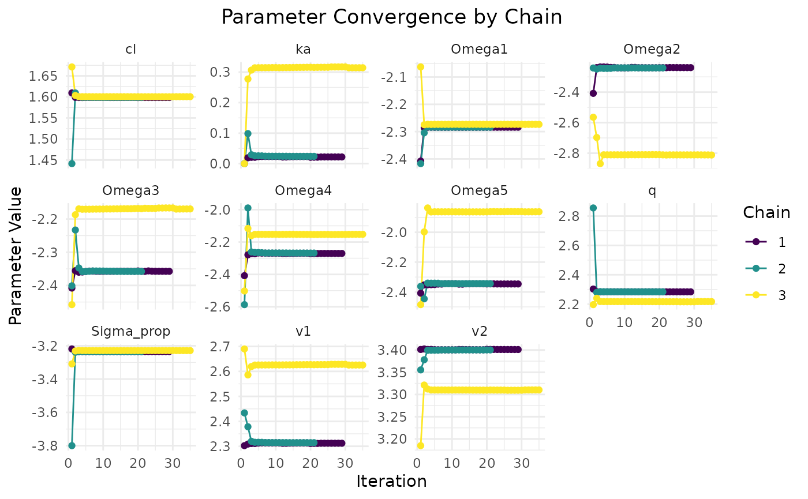

Example of using admr with rxode2
Import the admr and other packages:
head(examplomycin)
#> ID TIME DV AMT EVID CMT
#> 1 460 0.00 0.000 100 101 1
#> 2 460 0.10 0.752 0 0 2
#> 3 460 0.25 1.932 0 0 2
#> 4 460 0.50 3.694 0 0 2
#> 5 460 1.00 3.479 0 0 2
#> 6 460 2.00 4.003 0 0 2In this scenario, we will use the examplomycin dataset
to demonstrate how to use the admr package with the
rxode2 package. We show how to manipulate the dataset to
get it in the right format for the admr package. In future
scenarios, we might not have access to an individual dataset, but this
vignette demonstrates the right format.
examplomycin_wide <- examplomycin %>%
filter(EVID != 101) %>%
dplyr::select(ID, TIME, DV) %>% # Select only the relevant columns
pivot_wider(names_from = TIME, values_from = DV) %>%
dplyr::select(-c(1))
examplomycin_aggregated <- examplomycin_wide %>%
admr::meancov()
head(examplomycin_aggregated)
#> $E
#> 0.1 0.25 0.5 1 2 3 5 8
#> 0.966418 1.938774 2.787908 3.024706 2.257656 1.650808 1.063120 0.751180
#> 12
#> 0.512168
#>
#> $V
#> 0.1 0.25 0.5 1 2 3
#> 0.1 0.210318331 0.307810566 0.34863077 0.202610737 0.02244783 -0.04472722
#> 0.25 0.307810566 0.707512991 0.65887098 0.416118052 0.05871261 -0.07441765
#> 0.5 0.348630772 0.658870977 1.09983366 0.530554165 0.10572618 -0.07538386
#> 1 0.202610737 0.416118052 0.53055416 0.803744604 0.16252833 0.02792441
#> 2 0.022447834 0.058712608 0.10572618 0.162528331 0.34465070 0.12026872
#> 3 -0.044727222 -0.074417647 -0.07538386 0.027924410 0.12026872 0.24989260
#> 5 -0.018976800 -0.042420657 -0.04648286 0.001618855 0.07644080 0.11148574
#> 8 -0.006630907 -0.011273701 -0.01981830 0.016197981 0.06398700 0.07493319
#> 12 -0.005625994 -0.005018766 -0.01492001 0.014748325 0.04941463 0.05460018
#> 5 8 12
#> 0.1 -0.018976800 -0.006630907 -0.005625994
#> 0.25 -0.042420657 -0.011273701 -0.005018766
#> 0.5 -0.046482865 -0.019818299 -0.014920009
#> 1 0.001618855 0.016197981 0.014748325
#> 2 0.076440801 0.063987002 0.049414630
#> 3 0.111485737 0.074933189 0.054600176
#> 5 0.154215442 0.087680168 0.061332530
#> 8 0.087680168 0.096530356 0.057621124
#> 12 0.061332530 0.057621124 0.057988752Defining the RxODE model
We will define a two-compartment model for the examplomycin dataset. The model has the following differential equations:
rxModel <- RxODE({
# Parameters
ke = cl / v1 # Elimination rate constant
k12 = q / v1 # Rate constant for central to peripheral transfer
k21 = q / v2 # Rate constant for peripheral to central transfer
# Differential equations for drug amount in compartments
d/dt(depot) = -ka * depot
d/dt(central) = ka * depot - ke * central - k12 * central + k21 * peripheral
d/dt(peripheral) = k12 * central - k21 * peripheral
# Concentration in the central compartment
cp = central / v1
})A solved model is available for the two-compartment model, speeding
up the simulation process. The linCmt function has multiple
solved models. The function takes the following arguments:
rxModel <- RxODE({
cp = linCmt( # Solved one- or two-compartment model
cl, # Clearance
v1, # Volume of the central compartment
v2, # Volume of the peripheral compartment
q, # Inter-compartmental clearance
ka # Absorption rate constant
)
})Defining the prediction function
This is necessary for the admr package to simulate the
model. Tt constructs the event table for dosing and sampling, solves the
RxODE model, and extracts the predicted concentrations. The function can
handle both single and multiple individuals.
predder <- function(time, theta_i, dose = 100) {
n_individuals <- nrow(theta_i)
if (is.null(n_individuals)) {
n_individuals <- 1
}
# Create the event table for dosing and sampling
ev <- eventTable(amount.units="mg", time.units="hours")
ev$add.dosing(dose = dose, nbr.doses = 1, start.time = 0) # Assume same dose
ev$add.sampling(time) # Time points to simulate
# Solve the RxODE model for all individuals
out <- rxSolve(rxModel, params = theta_i, events = ev, cores = 0)
# Extract the predicted concentrations (cp) and format them as a matrix
cp_matrix <- matrix(out$cp, nrow = n_individuals, ncol = length(time),
byrow = TRUE)
# Return matrix of predicted concentrations
return(cp_matrix)
}This opts object contains the options for the admr
package. The genopts function generates the options object.
Here the parameters are: 1. time: - A vector of time points for sampling
predictions in the model. - These are the observation times at which the
model predictions are evaluated. - Example: c(.1, .25, .5, 1, 2, 3, 5,
8, 12). 2. p: - Values for the population parameters (beta) and their
covariance matrix (Omega).
- These are either the initial values for the optimization or the true values for simulation.
- Example: list(beta = c(cl = 5, v1 = 10, v2 = 30, q = 10, ka = 1), Omega = omegas(.09, 0, 5)).- nsim:
Number of Monte Carlo samples per iteration.
Higher values improve accuracy but increase computation time.
Example: 2500.
- n:
Number of individuals in the dataset.
This is used for the Objective Function Value (OFV), AIC, and BIC calculation.
Example: 500.
- fo_appr:
- Enabling the First-Order Approximation method for parameter estimation.
- omega_expansion:
Factor by which the covariance matrix (Omega) is expanded during estimation to account for uncertainty.
Example: 2 doubles the covariance matrix values temporarily during sampling.
- f:
The prediction function that simulates model outputs based on individual parameters.
Example: predder, as specified above.
opts <- genopts(time=c(.1,.25,.5,1,2,3,5,8,12),
p=list(beta=c(cl = 5, v1 = 10, v2 = 30,q = 10, ka = 1),
Omega=omegas(.09,0,5),Sigma_prop=0.04),
nsim=2500,n=500, fo_appr=F, omega_expansion=1.2,
f=predder)The fitEM function fits the model to the dataset. It
takes the following arguments:
fit.admr <- admr::fitEM(opts, examplomycin_aggregated, chains = 3)
#> Chain 1:
#> Iter | NLL and Parameters (11 values)
#> --------------------------------------------------------------------------------
#> 1: -1839.577 1.609 2.303 3.401 2.303 0.000 -2.408 -2.408 -2.408 -2.408 -2.408 -3.219
#>
#> ### Wide Search Phase ###
#> 2: -1845.238 1.601 2.309 3.404 2.284 0.019 -2.280 -2.167 -2.334 -2.245 -2.439 -3.235
#> 3: -1845.283 1.601 2.308 3.405 2.285 0.019 -2.286 -2.207 -2.341 -2.264 -2.405 -3.235
#> 4: -1845.283 1.601 2.308 3.405 2.285 0.019 -2.286 -2.206 -2.341 -2.264 -2.405 -3.235
#> 5: -1845.283 1.601 2.308 3.405 2.285 0.019 -2.286 -2.205 -2.343 -2.264 -2.405 -3.235
#> 6: -1845.283 1.601 2.308 3.405 2.285 0.019 -2.286 -2.205 -2.343 -2.264 -2.405 -3.235
#> 7: -1845.283 1.601 2.308 3.405 2.285 0.019 -2.286 -2.205 -2.343 -2.264 -2.405 -3.235
#> 8: -1845.282 1.601 2.308 3.405 2.285 0.018 -2.286 -2.205 -2.343 -2.264 -2.406 -3.235
#> 9: -1845.282 1.601 2.308 3.405 2.285 0.018 -2.286 -2.204 -2.343 -2.264 -2.406 -3.235
#> 10: -1845.282 1.601 2.307 3.405 2.285 0.018 -2.286 -2.204 -2.343 -2.265 -2.406 -3.235
#> 11: -1845.282 1.601 2.308 3.405 2.285 0.018 -2.286 -2.204 -2.343 -2.264 -2.406 -3.235
#> 12: -1845.282 1.601 2.308 3.405 2.285 0.018 -2.286 -2.204 -2.343 -2.264 -2.406 -3.235
#> Phase Wide Search Phase converged at iteration 12.
#>
#> ### Focussed Search Phase ###
#> 13: -1845.280 1.601 2.307 3.405 2.285 0.018 -2.286 -2.201 -2.343 -2.265 -2.410 -3.235
#> 14: -1845.280 1.601 2.307 3.405 2.285 0.018 -2.286 -2.201 -2.343 -2.265 -2.410 -3.235
#> 15: -1845.280 1.601 2.307 3.405 2.285 0.018 -2.286 -2.201 -2.343 -2.265 -2.410 -3.235
#> Phase Focussed Search Phase converged at iteration 15.
#>
#> ### Fine-Tuning Phase ###
#> 16: -1845.280 1.601 2.307 3.405 2.285 0.018 -2.286 -2.201 -2.343 -2.265 -2.410 -3.235
#> 17: -1845.280 1.601 2.307 3.405 2.285 0.018 -2.286 -2.201 -2.343 -2.265 -2.410 -3.235
#> 18: -1845.280 1.601 2.307 3.405 2.285 0.018 -2.286 -2.201 -2.343 -2.265 -2.410 -3.235
#> 19: -1845.280 1.601 2.307 3.405 2.285 0.018 -2.286 -2.201 -2.343 -2.265 -2.410 -3.235
#> Phase Fine-Tuning Phase converged at iteration 19.
#>
#> ### Precision Phase ###
#> 20: -1845.280 1.601 2.307 3.405 2.285 0.018 -2.286 -2.201 -2.343 -2.265 -2.410 -3.235
#> 21: -1845.280 1.601 2.307 3.405 2.285 0.018 -2.286 -2.201 -2.343 -2.265 -2.410 -3.235
#> 22: -1845.280 1.601 2.307 3.405 2.285 0.018 -2.286 -2.201 -2.343 -2.265 -2.410 -3.235
#> Phase Precision Phase converged at iteration 22.
#>
#> Chain 1 Complete: Final NLL = -1845.283, Time Elapsed = 8.09 seconds
#>
#> Phase Wide Search Phase converged at iteration 6.
#> Phase Focussed Search Phase converged at iteration 11.
#> Phase Fine-Tuning Phase converged at iteration 13.
#> Phase Precision Phase converged at iteration 14.
#>
#> Chain 2 Complete: Final NLL = -1845.280, Time Elapsed = 5.55 seconds
#>
#> Phase Wide Search Phase converged at iteration 12.
#> Phase Focussed Search Phase converged at iteration 14.
#> Phase Fine-Tuning Phase converged at iteration 18.
#> Phase Precision Phase converged at iteration 21.
#>
#> Chain 3 Complete: Final NLL = -1845.283, Time Elapsed = 8.92 seconds
#> This is the output of the fitEM function.
print(fit.admr)
#> -- FitEM Summary --
#>
#> -- Objective Function and Information Criteria --
#> Log-likelihood: -1845.2827
#> AIC: 3701.57
#> BIC: 3758.93
#> Condition#(Cov): 144.64
#> Condition#(Cor): 204.50
#>
#> -- Timing Information --
#> Best Chain: 8.0870 seconds
#> All Chains: 22.5636 seconds
#> Covariance: 28.1141 seconds
#> Elapsed: 50.68 seconds
#>
#> -- Population Parameters --
#> # A tibble: 6 × 6
#> Parameter Est. SE `%RSE` `Back-transformed(95%CI)` `BSV(CV%)`
#> <chr> <dbl> <dbl> <dbl> <chr> <dbl>
#> 1 cl 1.60 0.0153 0.954 4.96 (4.81, 5.11) 31.9
#> 2 v1 2.31 0.0842 3.65 10.05 (8.52, 11.85) 33.2
#> 3 v2 3.40 0.0394 1.16 30.11 (27.87, 32.53) 31.0
#> 4 q 2.28 0.0213 0.930 9.82 (9.42, 10.24) 32.2
#> 5 ka 0.0186 0.0794 427. 1.02 (0.87, 1.19) 30.0
#> 6 Residual Error 0.0394 NA NA 0.0394 NA
#>
#> -- Iteration Diagnostics --
#> Iter | NLL and Parameters
#> --------------------------------------------------------------------------------
#> 1: -1839.577 1.609 2.303 3.401 2.303 0.000 -2.408 -2.408 -2.408 -2.408 -2.408 -3.219
#> 2: -1845.238 1.601 2.309 3.404 2.284 0.019 -2.280 -2.167 -2.334 -2.245 -2.439 -3.235
#> 3: -1845.283 1.601 2.308 3.405 2.285 0.019 -2.286 -2.207 -2.341 -2.264 -2.405 -3.235
#> 4: -1845.283 1.601 2.308 3.405 2.285 0.019 -2.286 -2.206 -2.341 -2.264 -2.405 -3.235
#> 5: -1845.283 1.601 2.308 3.405 2.285 0.019 -2.286 -2.205 -2.343 -2.264 -2.405 -3.235
#> ... (omitted iterations) ...
#> 18: -1845.280 1.601 2.307 3.405 2.285 0.018 -2.286 -2.201 -2.343 -2.265 -2.410 -3.235
#> 19: -1845.280 1.601 2.307 3.405 2.285 0.018 -2.286 -2.201 -2.343 -2.265 -2.410 -3.235
#> 20: -1845.280 1.601 2.307 3.405 2.285 0.018 -2.286 -2.201 -2.343 -2.265 -2.410 -3.235
#> 21: -1845.280 1.601 2.307 3.405 2.285 0.018 -2.286 -2.201 -2.343 -2.265 -2.410 -3.235
#> 22: -1845.280 1.601 2.307 3.405 2.285 0.018 -2.286 -2.201 -2.343 -2.265 -2.410 -3.235The plot function can be used to visualize the results.
It shows the convergence of the model fit and parameters by making a
trace plot of the chains.
plot(fit.admr)